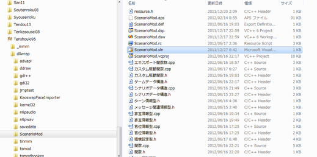
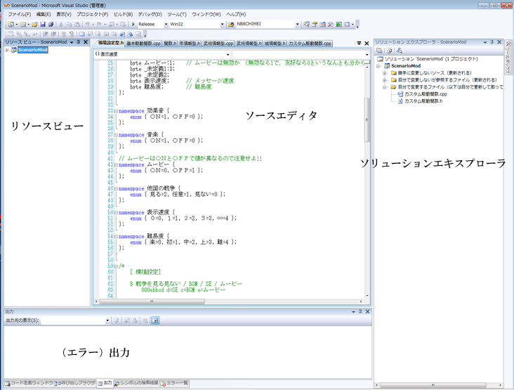
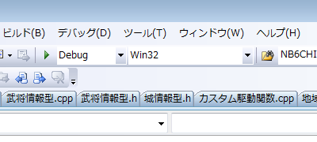
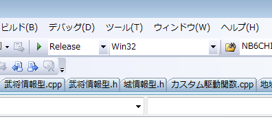
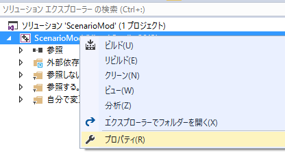
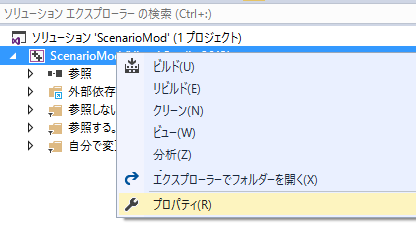
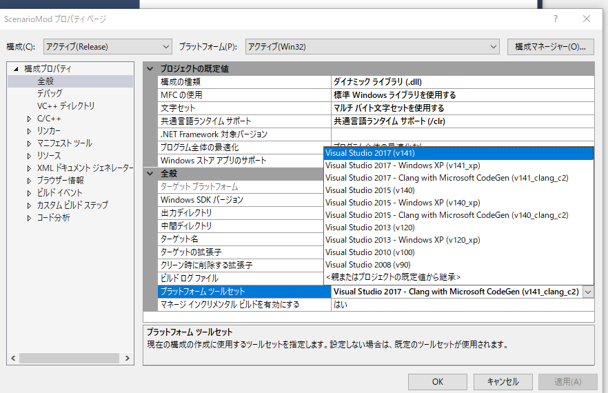
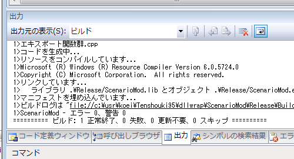
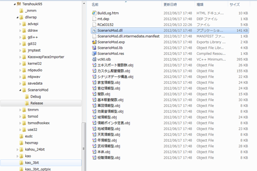
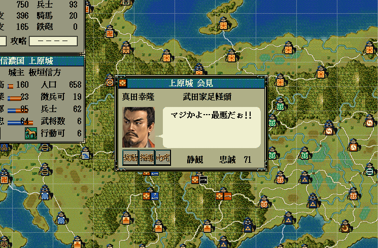

概要
ここでは、ScenarioModを初めてさわる人向けに、「ビルド」「dllのコピー」「天翔記起動」までの流れを説明します。
前準備
Visual C++ をインストールしていない人は、この段階で、Visual C++ をインストールすること。
詳細は、こちらで確認のこと。
ScenarioModを自分に都合の良いディレクトリへ
ScenarioModVer2.zipファイルを解凍し、ディレクトリまるごとC++開発に向いた場所へとまるまる移動してください。

ScnearioMod.sln
｢ScenarioMod.sln｣というファイルがある。これが全体のソリューション(sln)ファイルとなるのでを起動してくださ。
Visual Studioの画面
起動すると、Visual Studio (もしくは Visual C++)が立ち上がります。以下のような画面となります。

x86 Release がターゲット
ビルドする前に上部にある｢Debug｣もしくは｢Release｣などと出ているところを｢Release｣として下さい。
(普通は最初からReleaseしか表示されていないハズです)

↓

複数のVisual Studio をインストールしている場合の問題点
複数のVisual Studioが入っている場合、「プラットフォームツールセット」のバージョンが、
「今使っているVisual Studioのバージョンと食い違う」という問題が発生します。
これはバグではなく、「そのプロジェクトが作られた時のVSのバージョンを再現することを優先する」というVSの仕様です。
より新しいVisual Studioを利用しているのあれば、せっかくですので、以下のようにプラットフォームツールセットも新しいものに引き上げるのが良いかと思います。
 


初めてのビルド
さて、まずは、ビルド作業に入ります。
｢F7｣キーを押してみましょう。F7キーとは｢ソリューションのビルド｣という作業であり、
メニューの｢ビルド｣からも選択できますし、ソリューションエキスプローラの｢ソリューション 'ScenarioMod'｣のところを右クリックしても｢ビルド｣が可能です。

この段階でエラーが出たという人は、ソリューションの｢リビルド｣をしてみましょう。
ScenarioMod.dllを天翔記フォルダにコピー
さて、ScenarioModのサブディレクトリの｢Release｣というフォルダ内に、待望の｢ScenarioMod.dll｣が出来たハズです。
これを｢天翔記フォルダ(tenshou.exeやtsmod.dllと同じフォルダ)｣にコピペ(か移動)してみましょう。

逆にScenarioMod.dllが邪魔な場合は、ScenarioMod.dllを消せばScenarioModに書いた分は機能しません。
そこにファイルが「有る」か「無い」か、それだけで切り替えることが出来る簡単設計です。
動作してるか確認
天翔記を起動して、「真田幸隆」と会話してみましょう。
普段と明らかに異なった動作が確認できれば、成功です!!
(何が起こるかはScenarioModのバージョンによって多少変化するでしょう）

まとめ
以上、ソリューションの起動＞ビルド＞ScenarioMod.dllを天翔記フォルダーにコピー
が一連の基本の流れとなります。